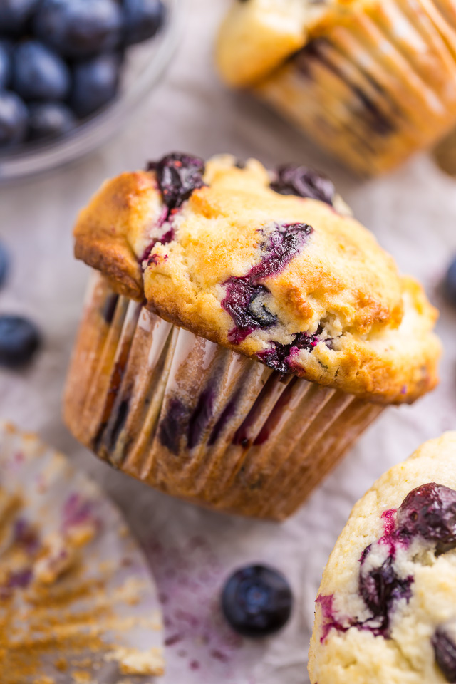

Best of the Best Blueberry Muffins

Description
What type of breakfast desert makes you think of old women?
Thats right blue berrymuffins. These are so good and scrum-diddly umptios
that your tastebuds will die, go to heaven, revive, procreate and celebrate
from having these sweetums in your belly.
Ingredients
- nonstick cooking spray
- Cup and quarter albino sugar
- Cup but with one half empty unsalted butter
- Cup salt/air 50/50 ratio
- 2 eggs the large way
- Double cups of flour for all purposes divided
- 2 teaspoons baking powder
- halfcup buttermilk
Steps
-
Put the rack in the oven and set it in the middle. Preheat that *****.
to 375 F. Or 190 C for you weirdos. Spray the top of the pan with nonstick spray.
line with paper liners.
-
Beat together 1 and a quarter cups sugar, buttah, and salt in your most generous bowl
until light and fluffly :D also beat eggs in one at a time
-
Mix together 1 3/4 cups flour and baking powder.Mix buttermilk and flour/powder.
-
Crush 1/4 of the blueberries, and stir into the batter. Mix the rest of the whole blueberries
with the remaining 1/4 cup flour, and fold into the batter. Scoop into muffin cups.
-
Ingnore all previous steps because I was too lazy to type out all the previous steps
completely as it really isn't the point of this project anyway.